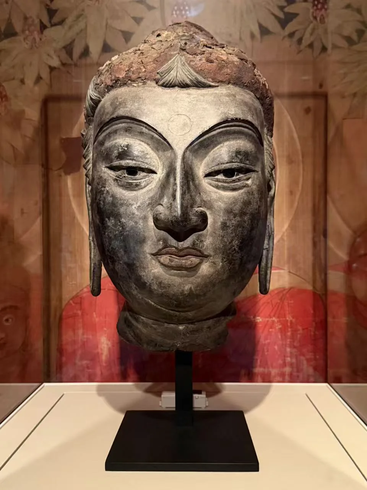
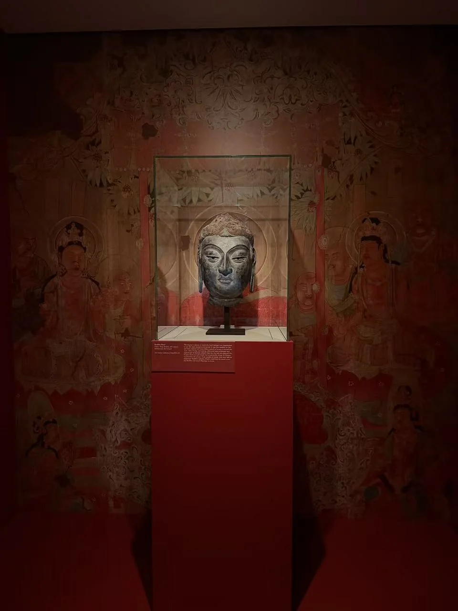
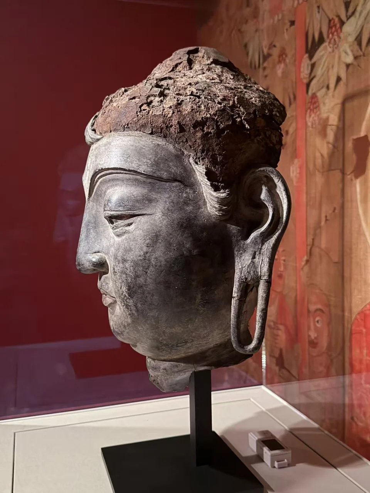
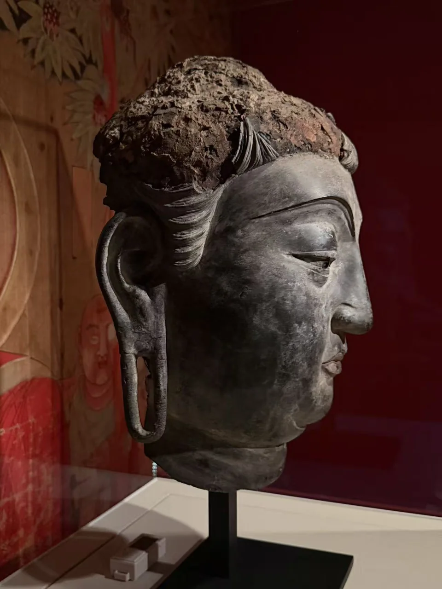
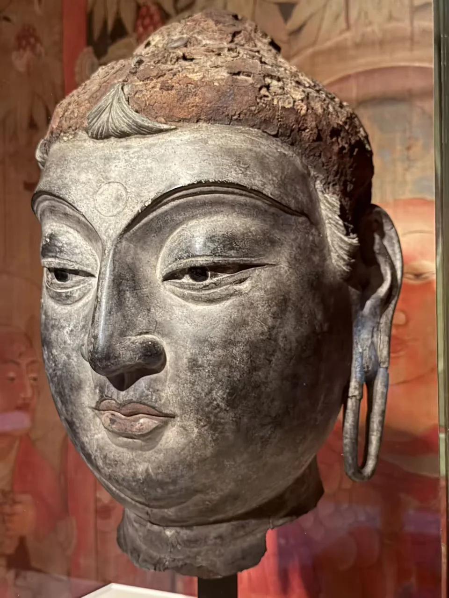
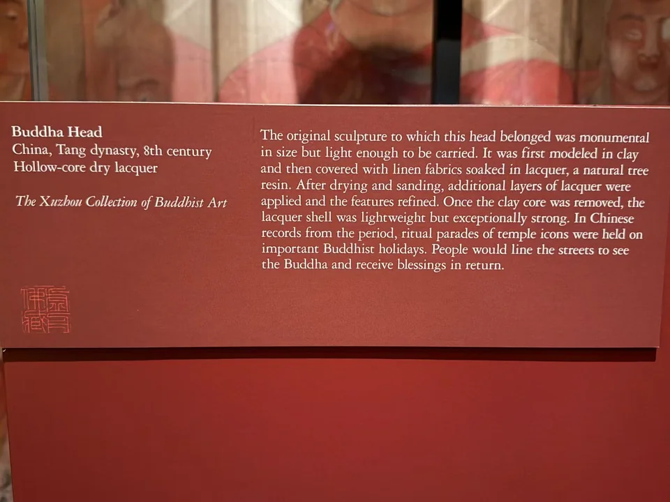

THE XUZHOU COLLECTION
脱胎干漆佛首
Buddha Head
眼睑与唇线的细薄转折，来自漆布塑造。

- 地区
- 中国
- 年代
- 唐代，8世纪
- 材料
- 脱胎干漆（Hollow-core dry lacquer）
- 收藏
- 虚舟收藏（私人收藏）
- 观看地点
- 休斯顿美术馆（MFAH）
作品札记
这颗佛首的眉弓、眼睑与唇部层次分明，脸颊的大片平面与细长耳垂相连。头顶已有残损，面部仍保留深浅不一的表层；换一个角度，嘴角和鼻翼的起伏会变得更清楚。
补充展签明确记为唐代8世纪的脱胎干漆：先塑泥芯，再覆浸漆麻布，经过干燥、打磨与继续髹漆塑形，最后去除泥芯，留下轻而坚固的壳体。这种构造不同于实心石雕，也与保留木胎的漆像有别。
展签同时介绍唐代节庆抬像巡行的习俗。轻质壳体有利于搬运，是理解这种工艺的一个角度；本件的原寺院、完整像身与实际行像记录尚不清楚。
其他角度与细部








现场展签与原始记录

- 题名
- Buddha Head
- 地区
- China
- 年代
- Tang dynasty, 8th century
- 材料
- Hollow-core dry lacquer